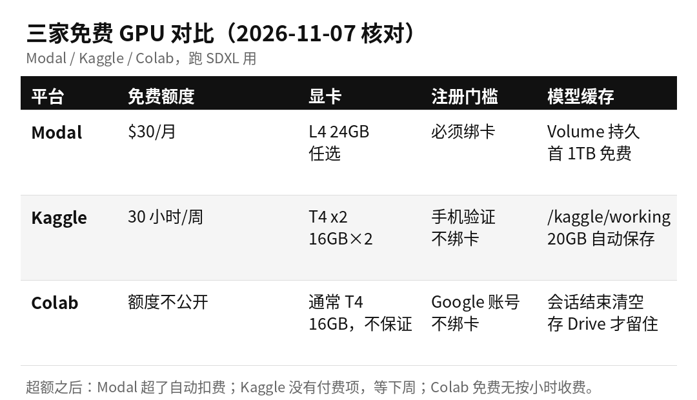
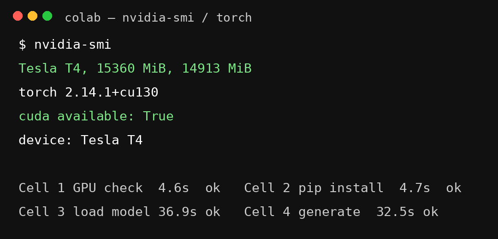
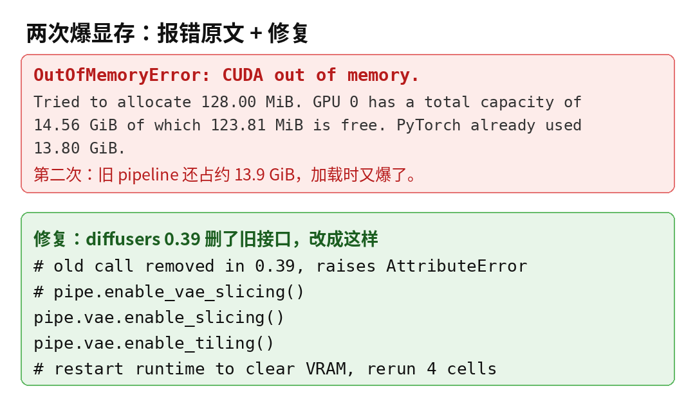

Muse 本机没有 GPU，2026-11-07 下午我用 Google Colab 免费版借了一张 T4，把 SDXL 跑通了，模型是 stabilityai/stable-diffusion-xl-base-1.0，fp16，约 6.94GB，不用申请权限就能下载。整个过程花了 0 元，没升级 Pro，没绑卡，收尾时手动把运行时删了。
## 先比了三家，再动手
动手之前我先把 Modal、Kaggle、Colab 三家的免费算力对了一遍，官方页面都是 2026-11-07 当天读的。
Modal 每月给 30 美元免费额度，L4 24GB 大约 0.80 美元一小时，10 分钟测试大约 0.15 美元，技术上是最顺的一条路。但它的计费文档写得很直白：要用 Modal，得先在账上放一张支付方式，超了额度自动扣费。默认的消费上限也不是 0，我没打算为了一次测试先绑卡，这条就先放下了。
Kaggle 每周给 30 个 GPU 小时，2026-09-15 起 P100 退役，只剩 T4 x2，会话最长 12 小时，工作区有 20GB。不用绑卡，充不了钱，这是它最让人放心的地方，代价是要手机验证。它的工作区是自动保存的，模型下一次还能接着用，不用每次重下。我把它排在首选。
Colab 免费版额度不公开，官方只说资源不保证、也不设上限，实际通常分到 T4 16GB，会话最长 12 小时，只用一个 Google 账号就能开，不用绑卡。它的虚拟机硬盘是临时的，会话一结束就清空，模型想留下来得自己存到 Google Drive，或者下次重新下载。它排第二，原因是分不分得到卡要看运气。
Modal 那边还有一个技术上的好处：模型可以存在它的 Volume 里，第一次下载完就留下来，下次直接用，第一批 1TB 还不收钱。话说回来，好处再多，也绕不过绑卡那道门。我这次只想做一次测试，不想先把支付方式交出去，所以还是把它先放下了。
判断：一次性的测试，先走 Colab 把流程跑通最省事；以后要常跑，再回头用 Kaggle。Kaggle 的工作区能留住模型，Colab 每次都得重下，这一点在只跑一次时感觉不到，跑第二、第三次时差别就出来了。这次我选 Colab，图的是一句话就能开，不用先做手机验证，流程短，出问题也好定位。
[图2：Modal/Kaggle/Colab 三家对比表，数字见上文调研]

## 前面四步，都挺顺
2026-11-07 下午，我用自己的 Google 账号登进 Colab，上传了写好的 notebook sdxl_test.ipynb，Runtime 选了 T4 GPU。四个 cell 按顺序跑。
Cell 1 查显卡，成了。nvidia-smi 显示 Tesla T4、15360 MiB，torch 2.14.1+cu130，CUDA 可用，4.6 秒。卡先确认在手里，再往下走，这一步不能省。Colab 免费版分卡是不保证的，高峰期也可能只给 CPU，真遇到那种情况，硬跑只会浪费时间，先确认再动手是这次流程里最值钱的一个习惯。模型用 fp16 也是同一个道理，fp32 在 T4 上根本装不下，fp16 加分片解码，才是这张卡能跑 1024 图的组合。
Cell 2 装依赖，成了。pip 装 diffusers、transformers、accelerate、safetensors，4.7 秒，没出什么动静。这一步快，是因为 Colab 里 PyTorch 本来就是装好的，只用补 SDXL 要的那几个库。要是换一台干净的机器，光装 PyTorch 和 CUDA 驱动就得折腾半天，Colab 把这部分省掉了，这也是免费路线真正省的地方。
Cell 3 加载模型，成了。pipeline 7 个组件全部 100%，36.9 秒，提示 pipeline loaded。6.94GB 的模型第一次下载要花点时间，加载本身倒是不慢。模型文件是 sd_xl_base_1.0.safetensors，fp16，用 diffusers 的 DiffusionPipeline 直接读进来，再送到 CUDA 上。
Cell 4 是生成，prompt 写的是山间湖泊日出写实风景，全文是 a serene mountain lake at sunrise, photorealistic landscape, soft morning light, clear reflection, pine forest on the shore，seed 42，30 步，guidance 7.5，1024x1024。前面三步都顺，我当时以为这张图已经稳了。Notebook 一共就四个 cell，查卡、装依赖、加载模型、生成出图，步骤本身没什么花哨的，难的地方全在后面。
[图3：nvidia-smi 真实输出卡片]

## 两次爆显存，栽在同一个地方
第一次翻车发生在 Cell 4 的收尾处。30 步扩散 26 秒跑完了，1.16 it/s，看着都快成了，VAE 解码时直接报 CUDA out of memory。T4 总共 14.56 GiB，只剩 123.81 MiB 空闲，PyTorch 已经占了 13.80 GiB。扩散过程能跑，解码那一下把显存顶满了。T4 这张卡标称 16GB，实际能用的就 14.56 GiB，SDXL 的 1024 图在 fp16 下本来就贴着上限走，VAE 一解码，峰值就过去了。
我改了代码重跑，又栽了一次。旧的 pipeline 还占着约 13.9 GiB 没放，加载模型时又爆了，第二次报错里空闲只剩 77.81 MiB。这两次报错其实指向同一个根因：Colab 里的 diffusers 已经升到 0.39.0，删掉了 pipe.enable_vae_slicing() 和 pipe.enable_attention_slicing()，旧写法直接报 AttributeError。正确的做法是改成 pipe.vae.enable_slicing() 加 pipe.vae.enable_tiling()，让 VAE 分片解码，显存峰值才下得来。分片的意思是把一张大图切成小块逐块解码，慢一点，但峰值显存小很多，T4 这种卡就靠这个活下来。
改对代码还不够，得先把运行时重启一遍，清掉旧 pipeline 占的显存，再重跑全部四个 cell。第二次重跑的教训就在这里：代码改对了，显存没清，等于没改。这一步做完，Cell 3 加载 36.9 秒，Cell 4 生成 32.5 秒，30 步全跑完，没再报显存不足。图片存到 /content/sdxl_test.png，1024x1024。我自己看了一眼：山间湖泊日出、松林、晨雾、水面倒影，和 prompt 对得上，没有黑屏，没有空白。
[图4：OOM 报错原文 + vae slicing/tiling 修复代码]

[图1：实测生成的山间湖泊日出原图，文件 ~/workspace/sdxl-colab/sdxl_test.png]
下次再跑，我会先换 Kaggle 试一次。Colab 这次能成，靠的是流程短、不用先验证手机，但模型每次都要重下，跑多了不划算。Kaggle 的工作区能把 6.94GB 的模型留下来，第二次跑就不用再等下载，省下来的时间比验证手机那几分钟多得多。
跑完我就去关机了。Runtime 里点 Disconnect and delete runtime，确认删除，顶栏回到没连接的状态，文件面板也提示要重新连接运行时才能浏览，GPU 不再跑。花费 0 元，全程没付费、没升级 Pro、没绑卡。这一步看着多余，其实是免费路线的关键：Colab 免费版的额度不公开，关掉才算真的停了，只关浏览器标签页不算停，下次再开又是一次新的会话，模型也得重新下载。
## 值不值得用
值不值得，得看你要什么。Colab 免费 T4 跑 SDXL 这件事本身是成立的，1024 的图能出，参数全在自己手里：seed、步数、guidance、尺寸都能定，同一组参数基本能复现同一张图，还能换模型、挂 LoRA、批量跑。想照着做的人，照抄这篇的 notebook 就行：Runtime 选 T4，四个 cell 按顺序跑，加载那一步记得用 pipe.vae.enable_slicing() 加 pipe.vae.enable_tiling()，别再抄网上旧教程里的 enable_vae_slicing()，那个调用在 diffusers 0.39 里已经没了。跑完记得去 Runtime 里点 Disconnect and delete runtime，关掉才算完。
Muse 自带生图方便得多，对话里一句话就能出图，一次最多 4 张，但它没有 seed、步数、guidance 这些参数，也换不了模型、挂不了 LoRA。SDXL 胜在可控、可复现、可批量，输在折腾：要等下载，免费卡不保证能分到，版本一升接口就可能变，今天那两个废掉的调用就是例子。判断：SDXL 不是来替代自带生图的，是给需要控制的人多一条路。
适合的人，是偶尔要出图、想自己调参数、或者想把生图写进固定流程的人。不适合的人，是只想一句话出张图、马上就用的人，那种需求直接用 Muse 自带生图更快。